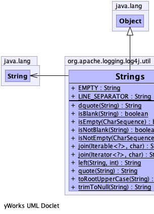
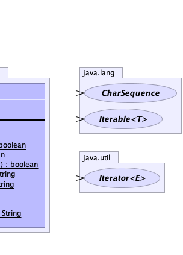

public final class Strings
extends java.lang.Object
|  |  |
| Modifier and Type | Field and Description |
|---|---|
static java.lang.String |
EMPTY
The empty string.
|
static java.lang.String |
LINE_SEPARATOR
OS-dependent line separator, defaults to
"\n" if the system property ""line.separator" cannot be
read. |
| Modifier and Type | Method and Description |
|---|---|
static java.lang.String |
dquote(java.lang.String str)
Returns a double quoted string.
|
static boolean |
isBlank(java.lang.String s)
Checks if a String is blank.
|
static boolean |
isEmpty(java.lang.CharSequence cs)
Checks if a CharSequence is empty ("") or null.
|
static boolean |
isNotBlank(java.lang.String s)
Checks if a String is not blank.
|
static boolean |
isNotEmpty(java.lang.CharSequence cs)
Checks if a CharSequence is not empty ("") and not null.
|
static java.lang.String |
join(java.lang.Iterable<?> iterable,
char separator)
Joins the elements of the provided
Iterable into
a single String containing the provided elements. |
static java.lang.String |
join(java.util.Iterator<?> iterator,
char separator)
Joins the elements of the provided
Iterator into
a single String containing the provided elements. |
static java.lang.String |
left(java.lang.String str,
int len)
Gets the leftmost
len characters of a String. |
static java.lang.String |
quote(java.lang.String str)
Returns a quoted string.
|
static java.lang.String |
toRootUpperCase(java.lang.String str)
Shorthand for
str.toUpperCase(Locale.ROOT); |
static java.lang.String |
trimToNull(java.lang.String str)
Removes control characters (char <= 32) from both ends of this String returning
null if the String is
empty ("") after the trim or if it is null. |
public static final java.lang.String EMPTY
public static final java.lang.String LINE_SEPARATOR
"\n" if the system property ""line.separator" cannot be
read.public static java.lang.String dquote(java.lang.String str)
str - a String"str"public static boolean isBlank(java.lang.String s)
null, empty, or when trimmed using
String.trim() is empty.s - the String to check, may be nulltrue if the String is null, empty, or trims to empty.public static boolean isEmpty(java.lang.CharSequence cs)
Checks if a CharSequence is empty ("") or null.
Strings.isEmpty(null) = true
Strings.isEmpty("") = true
Strings.isEmpty(" ") = false
Strings.isEmpty("bob") = false
Strings.isEmpty(" bob ") = false
NOTE: This method changed in Lang version 2.0. It no longer trims the CharSequence. That functionality is available in isBlank().
Copied from Apache Commons Lang org.apache.commons.lang3.StringUtils.isEmpty(CharSequence)
cs - the CharSequence to check, may be nulltrue if the CharSequence is empty or nullpublic static boolean isNotBlank(java.lang.String s)
isBlank(String).s - the String to check, may be nulltrue if the String is non-null and has content after being trimmed.public static boolean isNotEmpty(java.lang.CharSequence cs)
Checks if a CharSequence is not empty ("") and not null.
Strings.isNotEmpty(null) = false
Strings.isNotEmpty("") = false
Strings.isNotEmpty(" ") = true
Strings.isNotEmpty("bob") = true
Strings.isNotEmpty(" bob ") = true
Copied from Apache Commons Lang org.apache.commons.lang3.StringUtils.isNotEmpty(CharSequence)
cs - the CharSequence to check, may be nulltrue if the CharSequence is not empty and not nullpublic static java.lang.String join(java.lang.Iterable<?> iterable,
char separator)
Joins the elements of the provided Iterable into
a single String containing the provided elements.
No delimiter is added before or after the list. Null objects or empty strings within the iteration are represented by empty strings.
iterable - the Iterable providing the values to join together, may be nullseparator - the separator character to usenull if null iterator inputpublic static java.lang.String join(java.util.Iterator<?> iterator,
char separator)
Joins the elements of the provided Iterator into
a single String containing the provided elements.
No delimiter is added before or after the list. Null objects or empty strings within the iteration are represented by empty strings.
iterator - the Iterator of values to join together, may be nullseparator - the separator character to usenull if null iterator inputpublic static java.lang.String left(java.lang.String str,
int len)
Gets the leftmost len characters of a String.
If len characters are not available, or the
String is null, the String will be returned without
an exception. An empty String is returned if len is negative.
StringUtils.left(null, *) = null
StringUtils.left(*, -ve) = ""
StringUtils.left("", *) = ""
StringUtils.left("abc", 0) = ""
StringUtils.left("abc", 2) = "ab"
StringUtils.left("abc", 4) = "abc"
Copied from Apache Commons Lang org.apache.commons.lang3.StringUtils.
str - the String to get the leftmost characters from, may be nulllen - the length of the required Stringnull if null String inputpublic static java.lang.String quote(java.lang.String str)
str - a String'str'public static java.lang.String trimToNull(java.lang.String str)
Removes control characters (char <= 32) from both ends of this String returning null if the String is
empty ("") after the trim or if it is null.
The String is trimmed using String.trim(). Trim removes start and end characters <= 32.
Strings.trimToNull(null) = null
Strings.trimToNull("") = null
Strings.trimToNull(" ") = null
Strings.trimToNull("abc") = "abc"
Strings.trimToNull(" abc ") = "abc"
Copied from Apache Commons Lang org.apache.commons.lang3.StringUtils.trimToNull(String)
str - the String to be trimmed, may be nullnull if only chars <= 32, empty or null String inputpublic static java.lang.String toRootUpperCase(java.lang.String str)
str.toUpperCase(Locale.ROOT);str - The string to upper case.String.toLowerCase(Locale)